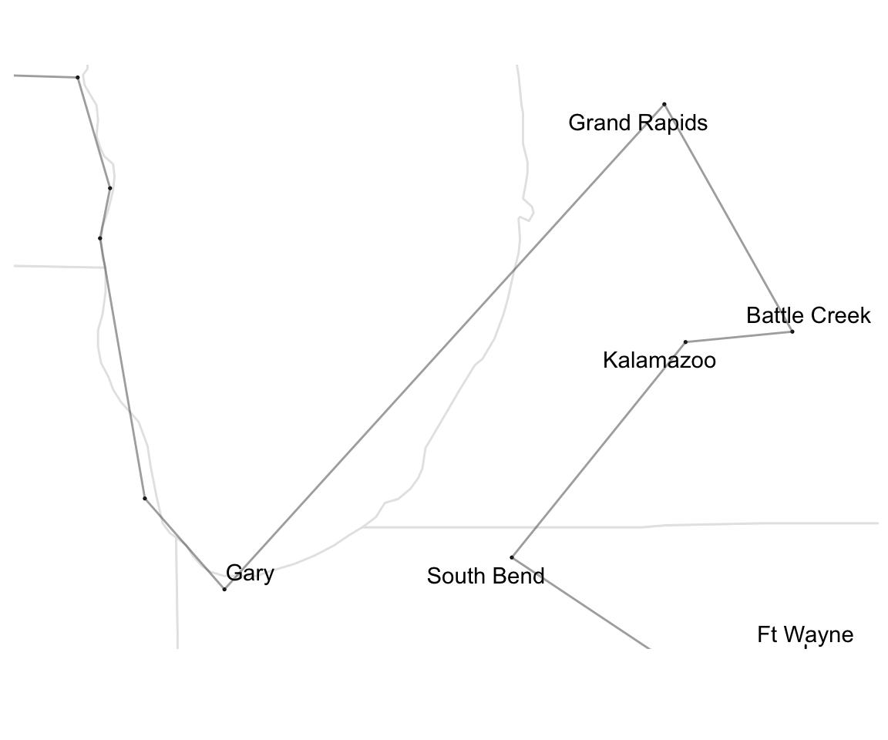

The End of Decision Theory
Overview
Two Big Questions
- What question are decision theorists trying to answer?
- Why is it a worthwhile question to ask and answer?
What Question
Decision theory is about trying to describe what a certain kind of idealised decider will do.
Why Care About That Question
- Negative claim
-
Not because it helps us make decisions in anything like normal circumstances.
- Positive claim
-
Because it helps us predict and understand what people will do in an interesting range of cases.
Getting at the Question
Methodology
- Figure out what question decision theorists must be asking by looking at what answers they give.
- Concentrate on questions that everyone (in the field) answers the same way.
Betting Example
- Chooser has $110, and is in a sports betting shop.
- There is a basketball game about to start, between two teams they know to be equally matched.
- Chooser has three options: bet the $110 on Home, bet it on Away, keep money.
- If they bet and are right, they win $100 (plus get the money back they bet), if they are wrong, they lose the money.
Betting Example
- Given standard assumptions about how much Chooser likes money, literally everyone in decision theory thinks Chooser should not bet.
- So decision theory is not in the business of answering this question:
- What action will produce the best outcome?
Axiology
- We do have a discipline in philosophy that is all about evaluating outcomes: axiology.
- It’s a worthwhile project.
- But it’s not what decision theorists are up to.
Why Not Axiology?
- Intuitive Answer
-
It isn’t very practical in this case. Chooser can’t bet on the winner.1
Helpful Advice
- Philosophical decision theory is not in the business of providing helpful advice to choosers.
- We can see this by another example.
- Task: find the shortest path that goes through each of these cities.
Answer
- Literally every philosophical decision theory on the market says that one should choose the path that’s actually shortest.
- That’s not particularly helpful advice!
Helpful Advice
Now as it turns out there are various helpful things you can say here.
- Farthest Insertion Algorithm
-
Start with an arbitrary city. At each stage, add a city to the path by finding the point to insert it into the path that will add the least distance. The city you add should be the one farthest from the existing path.
Not a bad path, but not the best.
More Good Advice
Delete pairs of edges and find the optimal replacement for that pair, until there are no benefits from doing this deletion.
- This will give you something very close to the original, but typically a bit shorter. And here it knocks off a few hundred miles.
Making Adjustments


Unlimited Computing
- If you have unlimited computer power, you could brute force your way through all 257! paths.
- Or even with a bit less computing power (but with more mathematical knowledge than before) you can come up with the following map.

I’m not sure if this is best, but it’s the best I could do, and it involved applying black box algorithms I don’t understand.
Where We’re At
Let’s summarise these two cases in a table.
| Betting | Salesman | |
|---|---|---|
| Best outcome | Bet on winner | Shortest path |
| Decision theory | Pass | Shortest path |
| Best advice | Pass | Learn algorithms |
Decision theory is neither the theory of what is best to do, nor what is advisable to do.
So What Is It?
Imagine a version of Chooser with knowledge as it is, and computational powers as they might be.
- So for any mathematical problem, they can do it instantly.
- Ask, what would they do?
Decision Theory as Idealisation
They will pass in bet, and choose the shortest path.
- The mathematical work will be immense.
- They have to calculate the path length for each of 257! paths.
- And they have to find the minimum length among all of them.
- But setting computational costs to zero, this is easily do-able.
Technical Detour
Most philosophical decision theory concerns decisions under uncertainty, not decisions like Salesman that are made under certainty.
- But the structure is still the same.
Technical Detour
They say that for each option, you should loop through the possible states of the world, in each case multiplying something (usually a probability) by something else (usually a utility), and then summing the results. Then you choose the maximum.
- That’s exactly the same technical task as solving Salesman by brute force.1
Summary
Decision theory describes what a particular kind of idealised agent will do.
- I’ve bolded will because it’s going to turn out that’s the important modal to use here; as opposed to should.
- If there is any normativity here, it’s in the idealised part of that sentence, not the modal.
Idealisations as Life Goals
A Modest Proposal
Decision theory is relevant to how we should act because:
- It tells us that idealised people do use decision theory, and
- We should try to be like idealised people.
- We should try to use decision theory.
I think this stands for What Would Jeffrey Do?
First Objection - Knowing the Inputs
To use decision theory as a guide to action, I need to know the utility of the possible states.
- Knowing ordering isn’t enough, need cardinality of each utility.
- I can only ever tell that the utility of A is half way between that of B and C by thinking about whether A is better or worse to take than a 50/50 bet on B or C.
- I need to make decisions to get the inputs to decision theory.
- And I think this is the usual case.
Second Objection - The General Theory of the Second Best
In general, it’s not true that one should try to approximate what the ideal is like.
The General Theory of the Second Best, by R. G. Lipsey and Kelvin Lancaster, The Review of Economic Studies, 1956
This is one of the most philosophically important economics papers ever published.
Second Best
Often times, the right thing to do is something whose value consists in mitigating the costs of our other flaws.
- We should, especially in high stakes settings, stop and have a little think before acting.
- The “ideal agent” of decision theory never stops to have a think.
- Stopping is costly, and they don’t gain anything from it.
Second Best
- The ideal agent does lots of things we don’t do.
- They always take reasonable hedges against costly possibilities, and they never stop to have a think.
- Knowing that the ideal agent is F doesn’t tell us whether we should try to be F unless we also know that F is more like the first of these than the second.
- And decision theory, in anything like its current form, is not particularly helpful on this score.
Third Objection - The Yoda Objection
Decision theory doesn’t say what one should try or not try, it says what one should do.
- So it’s weird to infer something about trying from a theory about trying.
Yoda
I think there’s something importantly right about this - decision theory gives criteria of correctness not methods of deliberation - but that in turn shows us why it might be useful.
Idealisations as Models
Luck
One thing that decision theory is useful for is sorting bad decisions from bad luck.
- This is important in assessing spur-of-the-moment decisions on whether to gamble or not in, e.g., sporting situations.
- But I’m not sure it is important beyond that.1
Two Notions of Idealisation
In philosophy we use the word ‘idealisation’ for two rather different kinds of thing.
- Perfect
- Simple
Two Notions of Idealisation
It’s easy to come up with things that are one but not the other.
- Whoever the greatest writer or painter is, they aren’t simple.
- A point mass is not perfect in any sense, but it is a very useful simplication in reasoning.
Idealisations in Decision Theory
Decision theory provides idealisations in the second sense - they are simplifications.
- Just like the point masses we use in the ideal gas law, they say not what should happen, but what would happen in the absence of certain complications.
Idealisations in Decision Theory
Why do I say it isn’t the perfection kind?
- As already noted, it’s bad advice. Don’t spend zero seconds on hard but important math problems, like your idealised self does.
- But the idealised self isn’t really perfect - they have very restricted information.
Idealisations in Decision Theory
The idealised self that gets used is god-like in one respect - computational ability - but human-like in another - informational awareness.
- That’s a common feature of idealised models.
- You abstract away from one feature, but not others.
Why Care?
That’s what we do, but why do we do it?
- Because sometimes these models are enlightening.
- Sometimes, the fact that we have computational limitations is not relevant to predicting/explaining/understanding what we will do.
Really, Why Care?
It’s tempting to identify these with high stakes situations, since those are ones where we’ll throw enough computational resources at the problem that we have god-like powers.
- But that isn’t quite right.
- In some high stakes cases, we also throw enough investigative resources at the problem that holding actual knowledge fixed is a bad modeling assumption.
Informational Limitations
What we need are cases where there are principled limitations to our informational capacities, such as,
- Cases where the information concerns the future; or
- Cases where someone has (or may have) just as strong an incentive to hide information from us.
I’ll end with a discussion of an important instance of the second.1
Akerlof on Lemons

Akerlof on Lemons
A 20th Century Puzzle
Used cars sold at a huge discount to new cars, even when the cars were just a few months old with almost no usage.
- There was no agreed upon explanation for this, with the most common theory being that it reflected a preference/prejudice on the part of buyers.
Akerlof’s Theory
Make the following assumptions.
- Cars vary a lot in quality, even coming from the same production line.
- Sellers of used cars know how good this token car is.
- Buyers of used cars do not; they only know how good the model is in general.
- People rarely sell cars they just bought.
- Everyone involved is an expected utility maximiser.
Akerlof’s Theory
Akerlof built a formal model with the following properties.
- The most common reason to sell a car one just bought is the discovery that it was a bad instance of that kind of car.
- Knowing this, buyers of used cars demanded a big discount in exchange for the possibility they were buying a dud.
- Everyone is acting rationally within the model, given their asymmetric information.
Akerlof’s Theory
If he was right (and I basically think he was) you’d expect the used car discount to fall if either of the following things happened.
- Production lines got more reliable, and cars off the same line were more similar to one another; or
- Buyers had access to better tools to judge the quality of used cars.
By 2020 both of those things had happened, and the used car discount was almost zero.
Back To Philosophy
You can’t build models like this without a theory of rational action under uncertainty.
- And that’s the payoff of philosophical decision theory.
- It’s an essential input to useful models, like this one.
Consequences for Decision Theory
The thing about explanatory models is that they can have very limited scope.
- An explanation of this particular election doesn’t have to generalise.
- Why did Democrats do so well in last month’s US elections? Because of a backlash to Republican attacks on abortion rights.
- Objection: That doesn’t explain the poor results of Labour in the 2019 UK election.
- Reply: Who cares? That’s no reason to think it’s the wrong explanation of this election.
Consequences for Decision Theory
This matters because a lot of people in decision theory assume that a good decision theory will have something to say about every possible choice situation.
- They say this because they think decision theory is in the business of giving advice, and you don’t know what situation your advisee will be in.
Consequences for Decision Theory
This matters because a lot of people in decision theory assume that a good decision theory will have something to say about every possible choice situation.
- But if you’re in the business of explanation, it’s fine to say that the theory only applies in some cases, and it only provides explanations in those cases.
Consequences for Decision Theory
There are (at least) two interesting notions around here:
- What the ideal decider would do in a particular situation.
- What it would be advisable for a real life human to do in this situation.
- These come apart in Traveling Salesman cases, and we should keep open the possibility that they also come apart in cases that philosophers talk about.
For Another Day
At this point you might expect that I’d have a theory that does go silent on a bunch of hard cases, and which explains away a bunch of intuitions about cases as intuitions about advisability, not about what an ideal decider does, and you’d be right on both counts.
- And I’m happy to talk about that theory (and those cases) at literally any length people want.
- But it’s mostly for another talk.
Conclusions
- Decision theory provides idealisations.
- These are not things we should aim for, but simplifications that play a role in explanations.